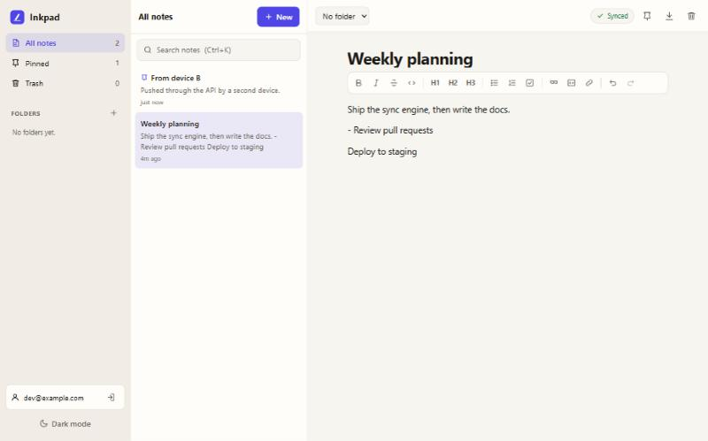

Inkpad
Offline-first notes app with rich text editing and multi-device sync
- Sync protocol with a monotonic server cursor and last-write-wins merging, so devices with skewed clocks never miss or overwrite changes. Live updates over WebSocket.
- Every keystroke saved to IndexedDB within 300 ms; the app shell is cached by a service worker, so it opens and works with no network.
- Email/password accounts with scrypt hashing and httpOnly sessions. 18 unit and API tests run on every push.